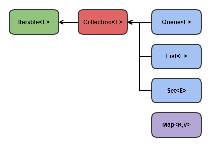

컬렉션 프레임워크의 개념
컬렉션 프레임워크(collection framework)란?
자바에서 컬렉션 프레임워크(collection framework)란 다수의 데이터를 쉽고 효과적으로 처리할 수 있는 표준화된 방법을 제공하는 클래스의 집합을 의미합니다.
즉, 데이터를 저장하는 자료 구조와 데이터를 처리하는 알고리즘을 구조화하여 클래스로 구현해 놓은 것입니다.
이러한 컬렉션 프레임워크는 자바의 인터페이스(interface)를 사용하여 구현됩니다.
자바에서 컬렉션 프레임워크를 구성하고 있는 인터페이스 간의 상속 관계는 다음 그림과 같습니다.
컬렉션 프레임워크의 핵심 인터페이스간의 상속계층도
컬렉션 프레임위크에서는 컬렉션데이터 그룹을 크게 3가지 타입이 존재한다고 인식하고 각 컬렉션을 다루는데 필요한 기능을 가진 인터페이스를 정의하였습니다. 위의 그림에서 <E>나 <K, V>라는 것은 컬렉션 프레임워크를 구성하는 모든 클래스가 제네릭으로 표현되어 있음을 알려줍니다. 제네릭의 개념에 대한 더 자세한 사항은 자바 제네릭(Generics)에서 확인할 수 있습니다.
컬렉션 프레임워크의 핵심 인터페이스와 특징
| 인터페이스 | 특징 |
|---|---|
| List<E> | 순서가 있는 데이터의 집합. 데이터의 중복을 허용합니다. 구현 클래스 : ArrayList, LinkedList, Stack, Vector, Queue |
| Set<E> | 순서를 유지하지 않는 데이터의 집합. 데이터의 중복을 허용하지 않습니다. 구현 클래스 : HashSet, TreeSet |
| Map<K,V> |
키(Key)와 값(Value)의 쌍(pair)으로 이루어진 데이터의 집합.
순서는 유지되지 않으며, 키는 중복을 허용하지 않고, 값은 중복을 허용합니다. 구현 클래스 : HashMap, TreeMap, Hashtable, Properties |
컬렉션 클래스(collection class)
컬렉션 프레임워크에 속하는 인터페이스를 구현한 클래스를 컬렉션 클래스(collection class)라고 합니다. 컬렉션 프레임워크의 모든 컬렉션 클래스는 List와 Set, Map 인터페이스 중 하나의 인터페이스를 구현하고 있습니다. 또한, 클래스 이름에도 구현한 인터페이스의 이름이 포함되므로 바로 구분할 수 있습니다. Vector나 Hashtable과 같은 컬렉션 클래스는 예전부터 사용해 왔으므로, 기존 코드와의 호환을 위해 아직도 남아 있습니다. 하지만 기존에 사용하던 컬렉션 클래스를 사용하는 것보다는 새로 추가된 ArrayList나 HashMap 클래스를 사용하는 것이 성능 면에서도 더 나은 결과를 얻을 수 있습니다.
Collection 인터페이스
List와 Set 인터페이스의 많은 공통된 부분을 Collection 인터페이스에서 정의하고, 두 인터페이스는 그것을 상속받습니다.
따라서 Collection 인터페이스는 컬렉션을 다루는데 가장 기본적인 동작들을 정의하고, 그것을 메소드로 제공하고 있습니다.
Collection 인터페이스에서 제공하는 주요 메소드는 다음과 같습니다.
| 메서드 | 설명 |
|---|---|
| boolean add(Object o) boolean addAll(Collection c) |
지정된 객체(o) 또는 Collection(c)의 객체들을 Collection에 추가합니다. |
| void clear() | Collection의 모든 객체를 삭제합니다. |
| boolean contains(Object o) boolean containsAll(Collection c) |
지정된 객체(o) 또는 Collection의 객체들이 Collection에 포함되어 있는지 확인합니다. |
| boolean equals(Object o) | 동일한 Collection인지 비교합니다. |
| int hashCode() | Collection의 hash code를 반환합니다. |
| boolean isEmpty() | Collection이 비어있는지 확인합니다. |
| Iterator iterator() | Collection의 iterator를 얻어서 반환합니다. |
| boolean remove(Object o) | 지정된 객체를 삭제합니다. |
| boolean removeAll(Collection c) | 지정된 Collection에 포함된 객체들을 삭제합니다. |
| boolean retainAll(Collection c) | 지정된 Collection에 포함된 객체만을 남기고 다른 객체들은 Collction에서 삭제합니다.
이 작업으로 인해 Collection에 변화가 있으면 true를 그렇지 않으면 false를 반환합니다. |
| int size() | Collection에 저장된 객체의 개수를 반환합니다. |
| Object[] toArray() | Collection에 저장된 객체를 객체배열(Object[])로 반환합니다. |
| Object[] toArray(Object[] a) | 지정된 배열에 Collection의 객체를 저장해서 반환합니다. |